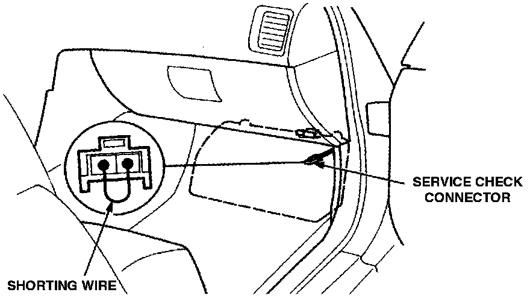

Diagnostic Mode Switch/Connector: Description and Operation
Service Check Connector:

PURPOSE
The Service Check Connector allows the technician to extract diagnostic information from the Engine Control Module (ECM), and to enable the timing to be set.
OPERATION
When the WHITE and the BLACK terminals of the Service Check Connector are shorted together, the ECM is placed in a diagnostic mode. In this mode, trouble codes may be extracted and displayed on the Malfunction Indicator Light (MIL), and ignition timing set mode is enabled.
CONSTRUCTION
A two pin connector block with a short pigtail, connected through the harness to the ECM, or Powertrain Control Module (PCM), on Automatic Transmission equipped cars.